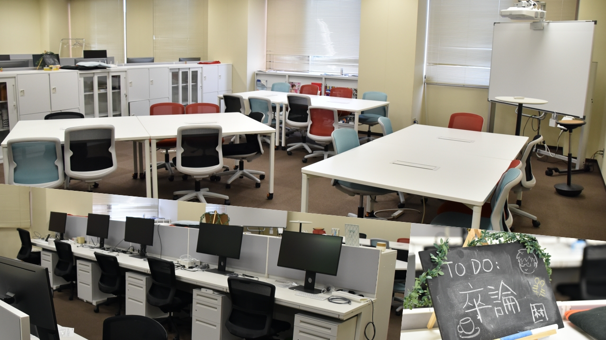

本研究室は、学士課程、修士課程、博士後期課程の学生の受け入れを行っています。
本研究室を希望される学生は、情報理工学部情報理工学科に入学後、1回生後期のコース配属で先端社会デザインコースに進んでください。3回生後期の研究室配属で7〜10名ほど受け入れます。希望者多数の場合は、GPAや志望動機、大学院への進学希望などに基づいてセレクションを行います。
本研究室を希望される学生は、情報理工学研究科計算機科学コースを受験ください。学内進学入試は例年7月に、一般入試は例年8月と2月に行われますので、立命館大学大学院入試サイトを確認してください。受験時に研究計画書の提出が求められるため、事前に担当教員に連絡するようにしてください。特に学内進学入試の学生は、3回生の年度末にご相談ください。
立命館大学情報理工学部以外の学生も積極的に受け入れます。情報系学部の学生には、計算機科学の専門性に加えて、社会やフィールドへの関与を求めます。それ以外の学部の学生には、自身の専門性に計算機科学の技術を応用する姿勢が必要です。
本研究室を希望される学生は、事前に担当教員に本研究室への志望動機をお送りください。その後、メールやオンライン会議を用いたヒアリングを行う場合があります。
